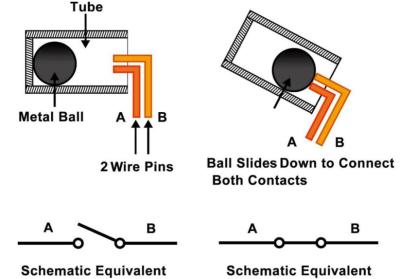
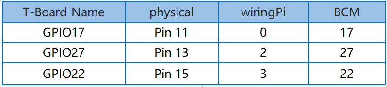
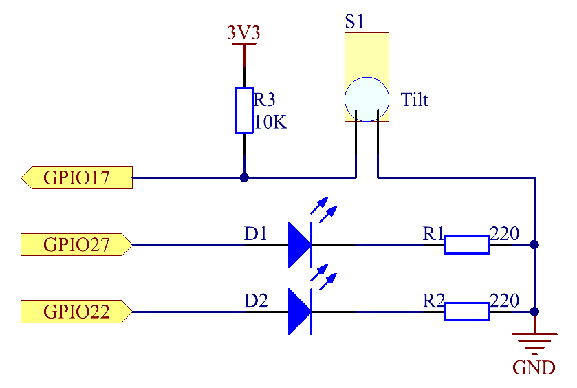

2.1.3 Tilt Switch¶
Introduction¶
This is a ball tilt-switch with a metal ball inside. It is used to detect inclinations of a small angle.
Components¶

Principle¶
Tilt
The principle is very simple. When the switch is tilted in a certain angle, the ball inside rolls down and touches the two contacts connected to the pins outside, thus triggering circuits. Otherwise the ball will stay away from the contacts, thus breaking the circuits.
Schematic Diagram¶
 Experimental Procedures¶
Step 1: Build the circuit.

For C Language Users¶
Step 2: Change directory.
cd /home/pi/davinci-kit-for-raspberry-pi/c/2.1.3/
Step 3: Compile.
gcc 2.1.3_Tilt.c -lwiringPi
Step 4: Run.
sudo ./a.out
Place the tilt horizontally, and the green LED will turns on. If you tilt it, “Tilt!” will be printed on the screen and the red LED will lights on. Place it horizontally again, and the green LED will turns on again.
Code
#include <wiringPi.h>
#include <stdio.h>
#define TiltPin 0
#define Gpin 2
#define Rpin 3
void LED(char* color)
{
pinMode(Gpin, OUTPUT);
pinMode(Rpin, OUTPUT);
if (color == "RED")
{
digitalWrite(Rpin, HIGH);
digitalWrite(Gpin, LOW);
}
else if (color == "GREEN")
{
digitalWrite(Rpin, LOW);
digitalWrite(Gpin, HIGH);
}
else
printf("LED Error");
}
int main(void)
{
if(wiringPiSetup() == -1){ //when initialize wiring failed,print message to screen
printf("setup wiringPi failed !");
return 1;
}
pinMode(TiltPin, INPUT);
LED("GREEN");
while(1){
if(0 == digitalRead(TiltPin)){
delay(10);
if(0 == digitalRead(TiltPin)){
LED("RED");
printf("Tilt!\n");
}
}
else if(1 == digitalRead(TiltPin)){
delay(10);
if(1 == digitalRead(TiltPin)){
LED("GREEN");
}
}
}
return 0;
}
Code Explanation
void LED(char* color)
{
pinMode(Gpin, OUTPUT);
pinMode(Rpin, OUTPUT);
if (color == "RED")
{
digitalWrite(Rpin, HIGH);
digitalWrite(Gpin, LOW);
}
else if (color == "GREEN")
{
digitalWrite(Rpin, LOW);
digitalWrite(Gpin, HIGH);
}
else
printf("LED Error");
}
Define a function LED() to turn the two LEDs on or off. If the parameter color is RED, the red LED lights up; similarly, if the parameter color is GREEN, the green LED will turns on.
while(1){
if(0 == digitalRead(TiltPin)){
delay(10);
if(0 == digitalRead(TiltPin)){
LED("RED");
printf("Tilt!\n");
}
}
else if(1 == digitalRead(TiltPin)){
delay(10);
if(1 == digitalRead(TiltPin)){
LED("GREEN");
}
}
}
If the read value of tilt switch is 0, it means that the tilt switch is tilted then you write the parameter ”RED” into function LED to get the red LED lighten up; otherwise, the green LED will lit.
For Python Language Users¶
Step 2: Change directory.
cd /home/pi/davinci-kit-for-raspberry-pi/python/
Step 3: Run.
sudo python3 2.1.3_Tilt.py
Place the tilt horizontally, and the green LED will turns on. If you tilt it, “Tilt!” will be printed on the screen and the red LED will turns on. Place it horizontally again, and the green LED will lights on.
Code
import RPi.GPIO as GPIO
TiltPin = 11
Gpin = 13
Rpin = 15
def setup():
GPIO.setmode(GPIO.BOARD) # Numbers GPIOs by physical location
GPIO.setup(Gpin, GPIO.OUT) # Set Green Led Pin mode to output
GPIO.setup(Rpin, GPIO.OUT) # Set Red Led Pin mode to output
GPIO.setup(TiltPin, GPIO.IN, pull_up_down=GPIO.PUD_UP) # Set BtnPin's mode is input, and pull up to high level(3.3V)
GPIO.add_event_detect(TiltPin, GPIO.BOTH, callback=detect, bouncetime=200)
def Led(x):
if x == 0:
GPIO.output(Rpin, 1)
GPIO.output(Gpin, 0)
if x == 1:
GPIO.output(Rpin, 0)
GPIO.output(Gpin, 1)
def Print(x):
if x == 0:
print (' *************')
print (' * Tilt! *')
print (' *************')
def detect(chn):
Led(GPIO.input(TiltPin))
Print(GPIO.input(TiltPin))
def loop():
while True:
pass
def destroy():
GPIO.output(Gpin, GPIO.HIGH) # Green led off
GPIO.output(Rpin, GPIO.HIGH) # Red led off
GPIO.cleanup() # Release resource
if __name__ == '__main__': # Program start from here
setup()
try:
loop()
except KeyboardInterrupt: # When 'Ctrl+C' is pressed, the program destroy() will be executed.
destroy()
Code Explanation
GPIO.add_event_detect(TiltPin, GPIO.BOTH, callback=detect, bouncetime=200)
Set up a detect on TiltPin, and callback function to detect.
def Led(x):
if x == 0:
GPIO.output(Rpin, 1)
GPIO.output(Gpin, 0)
if x == 1:
GPIO.output(Rpin, 0)
GPIO.output(Gpin, 1)
Define a function Led() to turn the two LEDs on or off. If x=0, the red LED lights up; otherwise, the green LED will be lit.
def Print(x):
if x == 0:
print (' *************')
print (' * Tilt! *')
print (' *************')
Create a function, Print() to print the characters above on the screen.
def detect(chn):
Led(GPIO.input(TiltPin))
Print(GPIO.input(TiltPin))
Define a callback function for tilt callback. Get the read value of the tilt switch then the function Led（） controls the turning on or off of the two LEDs that is depended on the read value of the tilt switch.
Phenomenon Picture¶